In this project, as an extension of Project 3-1, we implemented more ray tracing features. This included being able to render mirror and glass materials, microfacet materials, environmental lighting, and depth of field effects. We also got an opportunity to learn and practice OpenGL programming in the last section of this project, allowing us to actually work with GPU-optimized libraries instead of just rendering everything with our CPUs. It was an awesome project, making our ray tracer capable of more and more. There's so much it can render now, and that's amazing!
I encountered a couple of problems implementing Part 1 of the project, mostly due to mixing up the order and conditions under which the ligth should bounce - for example, the at_least_one_bounce_radiance doesn't always add one-bounce radiance if it's a delta light. I resolved this mostly by reviewing the spec and reasoning about what is "physically" happening in the scene. Otherwise, I also had a seemingly excessive amount of noise for a while, but one way I fixed this was by reducing the termination probability, giving the ray tracer more bounces on average to converge.
The other parts, 2-4, were more of challenges in better understanding the concepts we were programming. Part 4 in particular helped me understand some of the thinking/geometry behind thin lens rays and the like.
Part 5 was an interesting challenge in simply applying the concepts we've already learned with a new language; a lot of the challenge came from adapting to a new framework as well, thinking about the same ideas but in a slightly different way. Most of this was resolved by reading Piazza clarifications, reading more documentation, and talking with friends.
Part 1: Mirror and Glass Materials
Prompts
- Show a sequence of six images of scene CBspheres.dae rendered with max_ray_depth set to 0, 1, 2, 3, 4, 5, and 100. The other settings should be at least 64 samples per pixel and 4 samples per light. Point out the new multibounce effects that appear in each image.
Responses
- In zero bounces, we see only the area light.
In one bounce, we can see some direct lighting effects.
In two bounces, we can start seeing the spheres reflecting or refracting some light.
In three bounces, we see the right sphere actually refracts/bends light from the room and a bit of light from the right sphere at two-bounces is reflecting on the left sphere.
In four bounces, we see the right sphere have a bright whiteish glare at its base, and the left sphere reflects more of the right sphere's light now.
In five bounces, the right sphere also has a small bit of refracted light near the blue wall. The left sphere also has the right sphere's glare show up in it a little.
In 100 bounces, the image has mostly converged and we don't see too many new multibounce effects.
64 samples per pixel, 4 samples per light
|
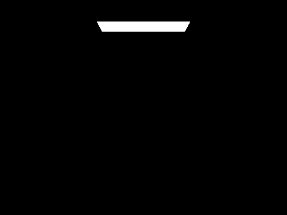
max_ray_depth = 0
|
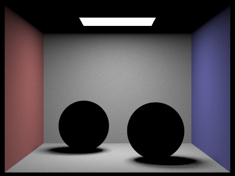
max_ray_depth = 1
|
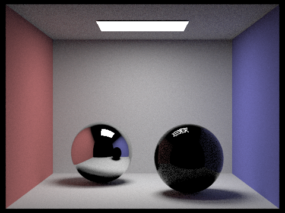
max_ray_depth = 2
|
|
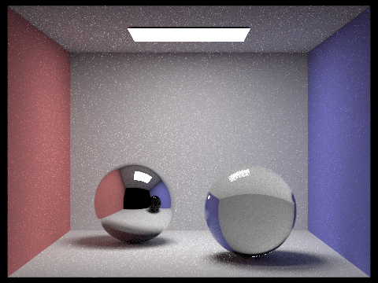
max_ray_depth = 3
|
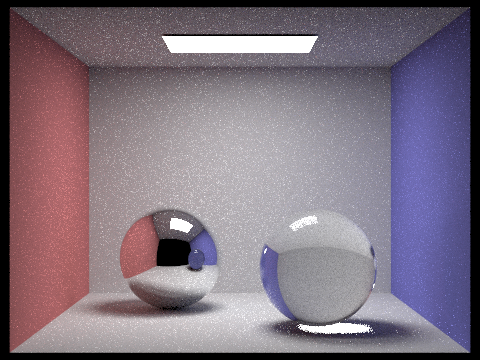
max_ray_depth = 4
|
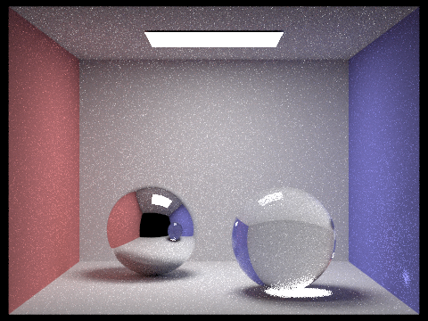
max_ray_depth = 5
|
|
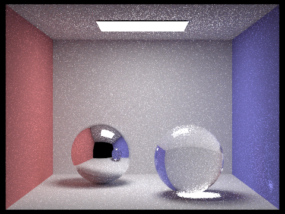
max_ray_depth = 100
|
Part 2: Microfacet Material
Prompts
- Show a sequence of 4 images of scene CBdragon_microfacet_au.dae rendered with α set to 0.005, 0.05, 0.25 and 0.5. The other settings should be at least 128 samples per pixel and 1 samples per light. The number of bounces should be at least 5. Describe the differences between different images. Note that, to change the α, just open the .dae file and search for microfacet.
- Show two images of scene CBbunny_microfacet_cu.dae rendered using cosine hemisphere sampling (default) and your importance sampling. The sampling rate should be fixed at 64 samples per pixel and 1 samples per light. The number of bounces should be at least 5. Briefly discuss their difference.
- Show at least one image with some other conductor material, replacing eta and k. Note that you should look up values for real data rather than modifying them arbitrarily. Tell us what kind of material your parameters correspond to.
Responses
- Generally, we notice that as alpha increases, the material appears more and more diffuse and less shiny/glossy. From 0.005 to 0.05, we see that the dragon starts to pick up some shiny, yellowish highlights along its back and other parts; the 0.005 alpha dragon is clearly "duller" to some extent. From 0.05 to 0.25, the dragon's surfaces look a lot more diffuse, but still pretty shiny. From 0.25 to 0.5, the dragon was is much more diffuse in appearance, with the shininess on its back and so on reflecting less color.
|
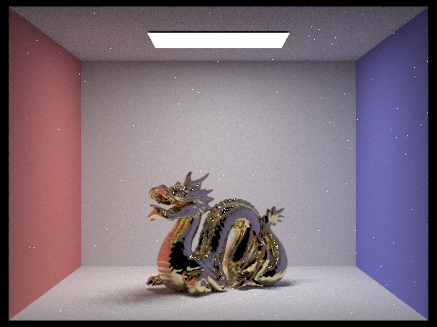
alpha = 0.005
|
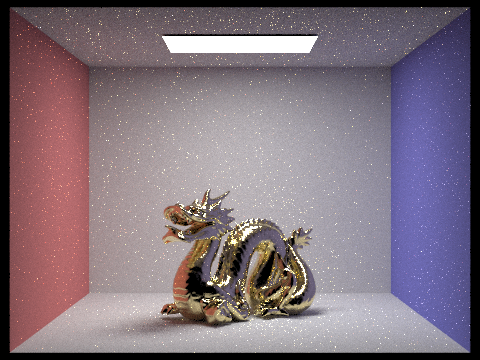
alpha = 0.05
|
|
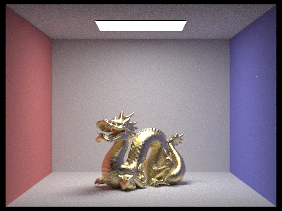
alpha = 0.25
|
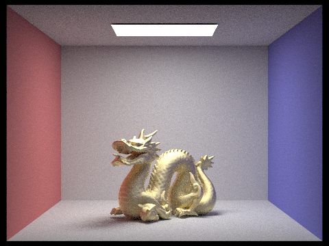
alpha = 0.5
|
- We can see below that hemisphere sampling results in a noisier, less-converged result than importance sampling when using the same parameters. That is, importance sampling allows us to converge to an image much faster than hemipshere sampling.
64 samples per pixel, 1 sample per light, 5 bounces
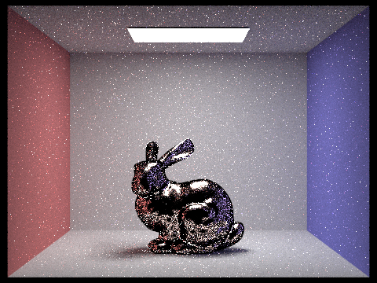
hemisphere sampling
|
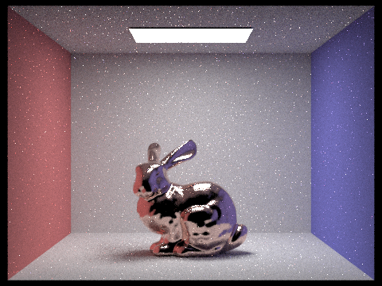
importance sampling
|
- The following dragons are dragons rendered as cobalt material, using the following parameters:
128 samples per pixel, 1 sample per light, 5 bounces
eta = (2.1849, 2.0500, 1.7925)
k = (4.0971, 3.8200, 3.3775)
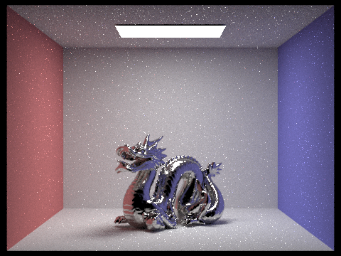
alpha = 0.05
|
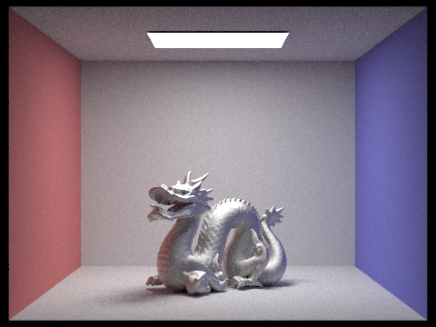
alpha = 0.5
|
Part 3: Environment Light
Prompts
- Show the probability_debug.png file for the .exr file you are using, generated using the save_probability_debug() helper function after initializing your probability distributions.
- Use the bunny_unlit.dae scene and your environment map .exr file and render two pictures, one with uniform sampling and one with importance sampling. Use 4 samples per pixel and 64 samples per light in each. Compare noise levels.
- Use the bunny_microfacet_cu_unlit.dae and your environment map .exr file and render two pictures, one with uniform sampling and one with importance sampling. Use 4 samples per pixel and 64 samples per light in each. Compare noise levels.
Responses
- This is the probability_debug.png for field.exr:
- It's a bit difficult to tell, with the diffuse material, the difference in noise levels. One might be able to perceive slightly less noise in the importance sampling bunny over the uniform sampling bunny, but in this case, in this lighting, it is hard to discern. Both share a rather "speckly" quality, non-smooth-looking surfaces.
64 samples per pixel, 4 samples per light, 5 bounces, field.exr
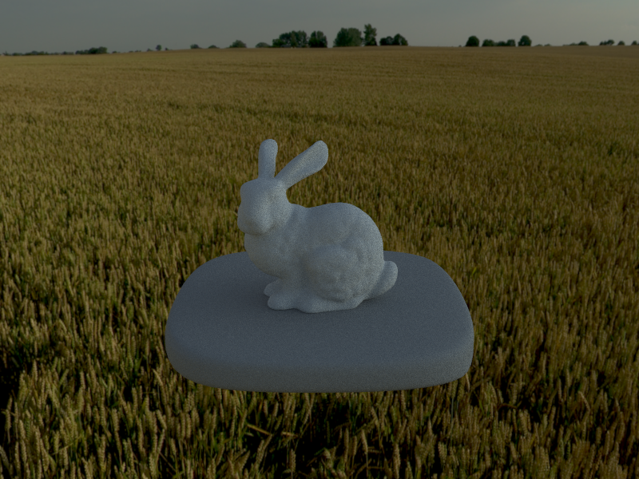
uniform sampling
|
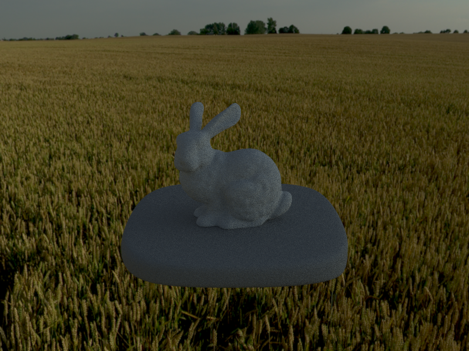
importance sampling
|
- We can see that the uniform sampling bunny is much noisier than the importance sampling bunny, particularly along the edges of the bunny. There are fewer "speckles", including on the base. Overall, the importance sampling bunny looks a lot smoother.
64 samples per pixel, 4 samples per light, 5 bounces, field.exr
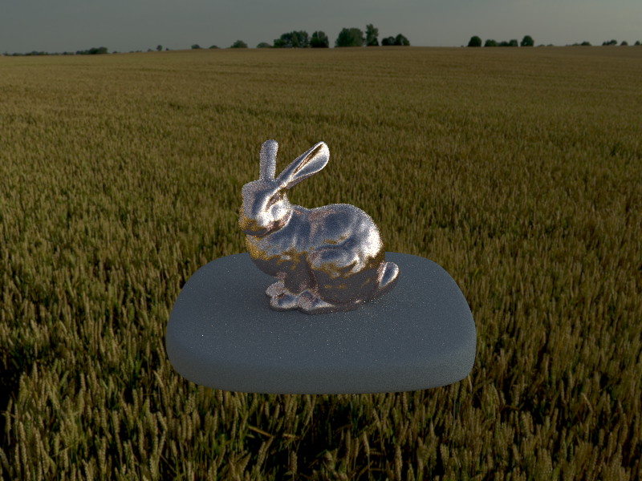
uniform sampling
|
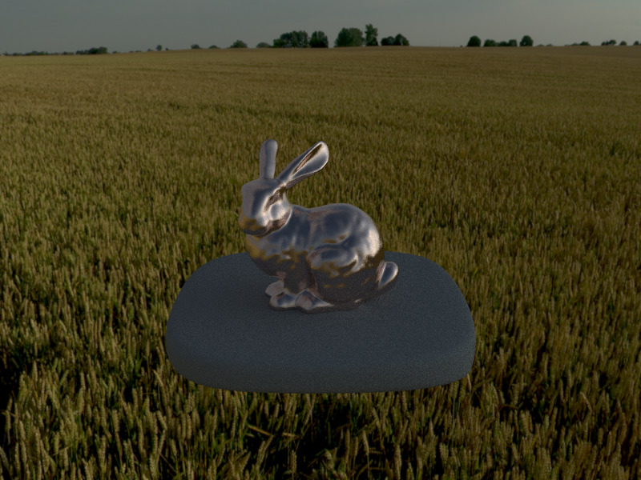
importance sampling
|
Part 4: Depth of Field
Prompts
- Show a "focus stack" where you focus at 4 visibly different depths through a scene.
- Show a sequence of 4 pictures with visibly different aperture sizes, all focused at the same point in a scene.
Responses
- This is a sequence of 5 pictures focused at different depths through the scene of this dragon.
64 samples per pixel, 4 samples per light, 8 bounces
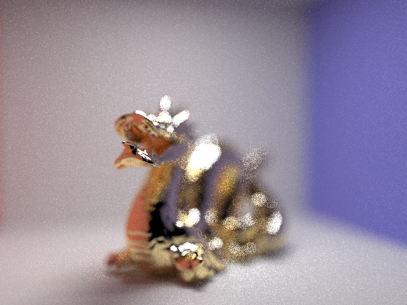
focal distance = 1.5
|
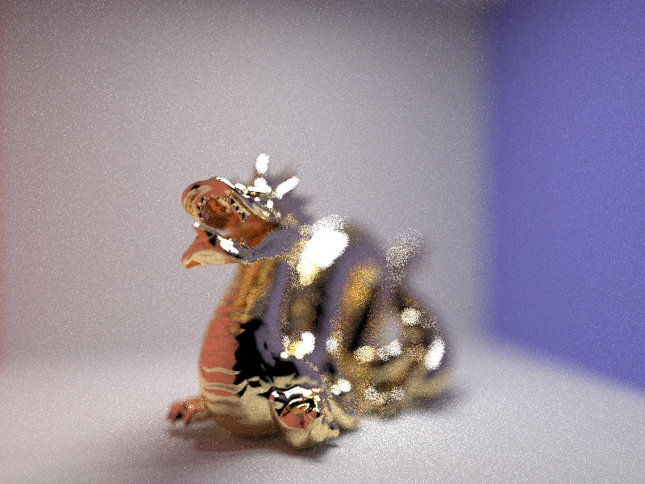
focal distance = 1.6
|
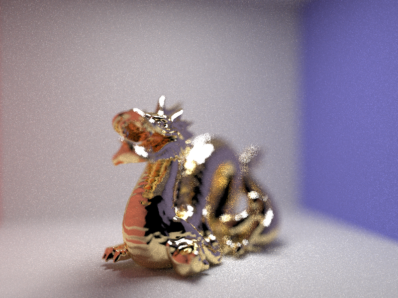
focal distance = 1.7
|
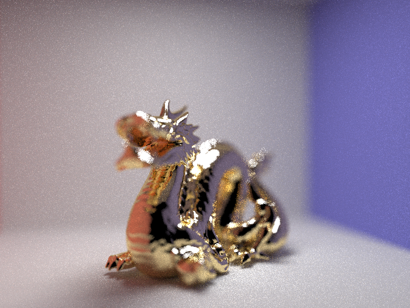
focal distance = 1.8
|
focal distance = 1.9
|
- This is a sequence of 5 pictures with different aperture sizes, all focused on this dragon.
8 samples per pixel, 2 samples per light, 8 bounces
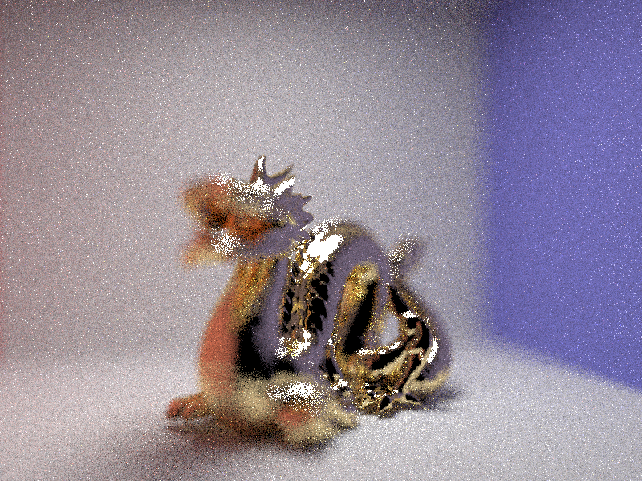
|
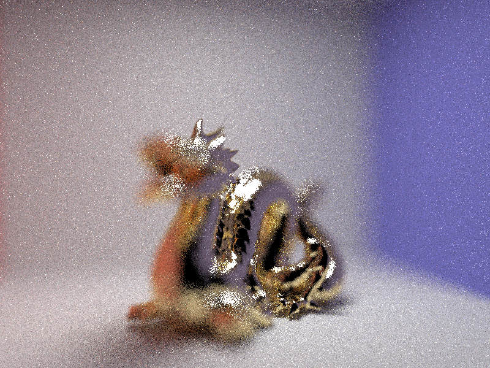
|
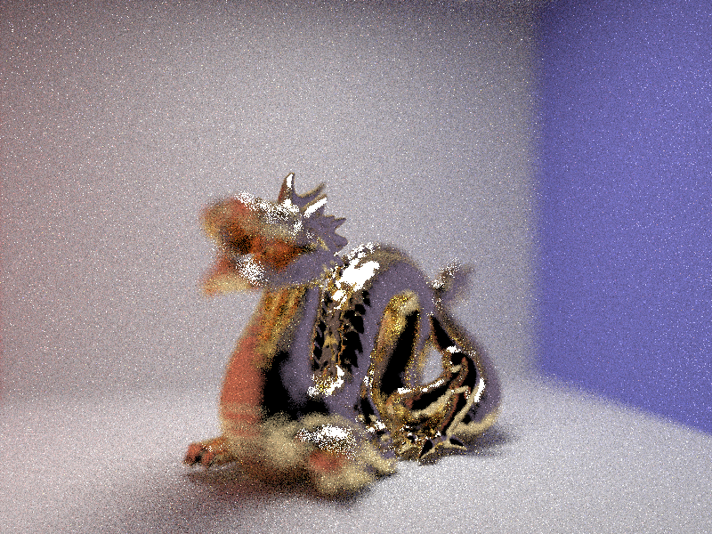
|
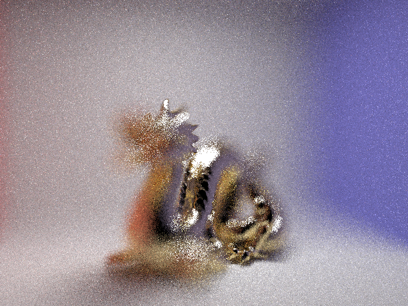
|
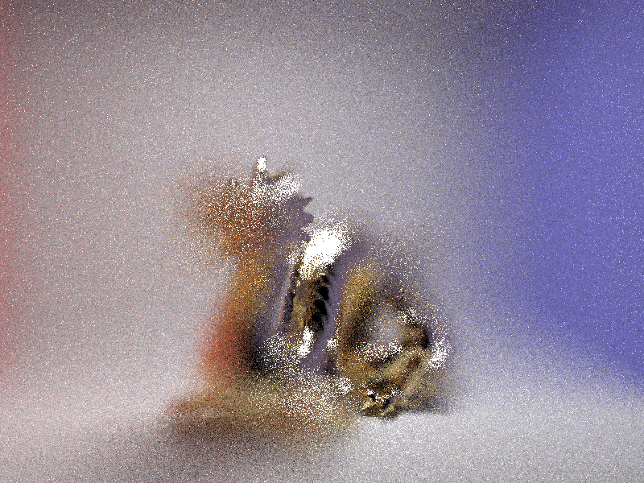
|
Part 5: Shaders
Prompts
- Copy the production gl directory to your docs directory. Make sure there is an anchor to gl/index.html somewhere in your writeup.
- Briefly explain in your own words what is a shader program and how vertex and fragment shaders work together to create lighting and material effects.
- Explain the Blinn-Phong shading model in your own words. Show a screen shot of your Blinn-Phong shader outputting only the ambient component, a screen shot only outputting the diffuse component, a screen shot only outputting the specular component, and one using the entire Blinn-Phong model.
- Show a screenshot of your texture mapping shader using your own custom texture by modifying src/renderers/t3-renderer.
- Show a screenshot of bump mapping and displacement mapping using the same texture for both renders. You can either provide your own texture or use one of the ones in the textures directory, BUT choose one that's not the default displacement2.png. Compare the two approaches and resulting renders in your own words. Compare how your the two shaders react to mesh coarseness by modifying the number of vertical and horizontal components in t4-1-renderer.js and t4-2-renderer.js. These are controlled by the 2nd and 3rd arguments to the SphereBufferGeometry constructor.
- Explain what you did in your custom shader!
Responses
- Link to my Part 5 gl/ directory!
- A shader program is basically a program that leverages parallelization to apply many transformations to render objects. In the case of WebGL, the program is also device-agnostic, whereas the programs we've been writing must be compiled to suit our specific computer builds. Vertex shaders essentially define, transform, and manipulate the position of objects as well as their normals. The output of these shaders are then the input to fragment shaders, which apply color, textures, material effects, and lighting effects to an object.
- The Blinn-Phong shading model essentially breaks up the shading process into 3 different lightings (ambient, diffuse, and specular) calculated separately then superimposed together to produce more realistic lighting effects. The ambient lighting represents the "global illumination" type of lighting, preventing shadows from being too dark. The diffuse lighting is how the light is spread out upon hitting the material. The specular lighting is the light that bounces from the light, directly back into the camera.
k_a = 0.0, k_d = 0.9, k_s = 0.4, p = 30.0
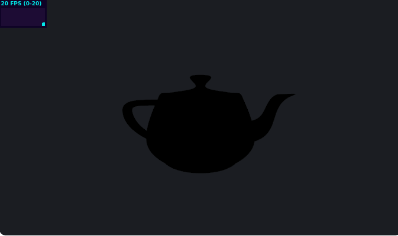
ambient
|
+
|
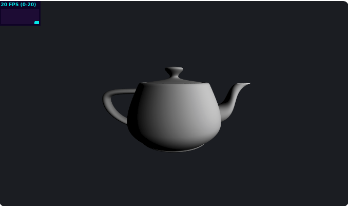
diffuse
|
+
|
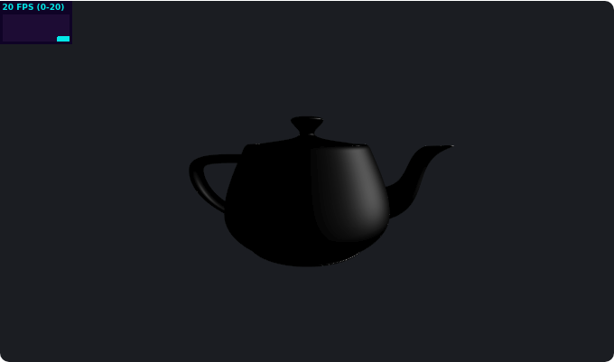
specular
|
=
|
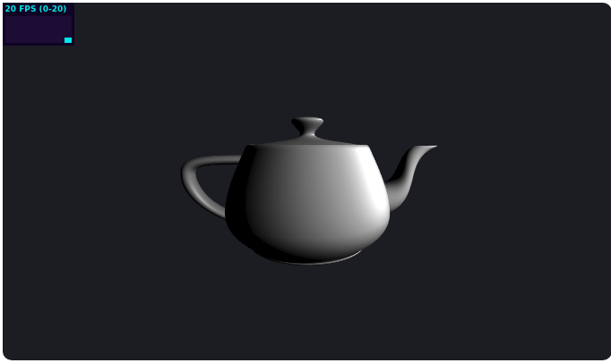
Blinn-Phong
|
- This is a photo of a flower I took several years ago!
 original texture image
original texture image
|
|
|
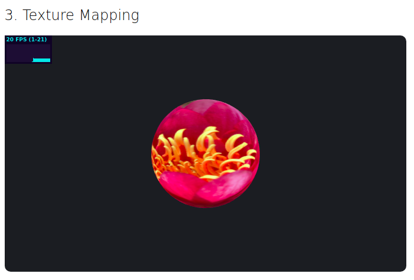
texture mapped onto a sphere
|
-
The middle row is the result of using the default parameters for bump and displacement mappings with texture displacement3. We can see that the bump mapping simply alters how the light shines on the sphere by adjusting the normals, whereas the displacement mapping increases the "height" of the non-ridge parts of the sphere as well. Thus, the latter deviates from the original radius of the sphere in addition to adjusting the normals, whereas the former adjusts the normals but maintains the sphere's original shape.
We can see when we halve the number of horizontal/vertical components, the resolution of the texture on both spheres decreases, looking blurrier overall and less accurate. In the case of the displacement mapping, the raised edges of the sphere are also a little less rough or sharp. This makes sense given we have fewer shapes to capture the same amount of detail. Comparing the 512-component and 128-component images better shows the loss of texture resolution and accuracy as we decrease in the number of components.
using displacement3.png
|
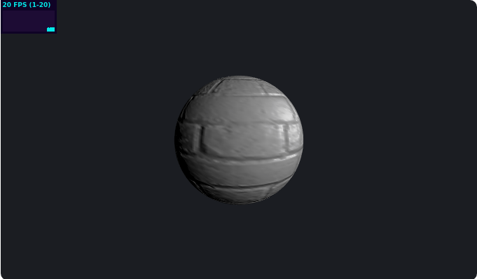
bump mapping
128 horizontal and vertical components
|
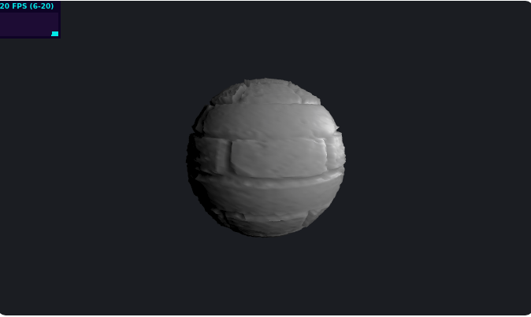
displacement mapping
128 horizontal and vertical components
|
|
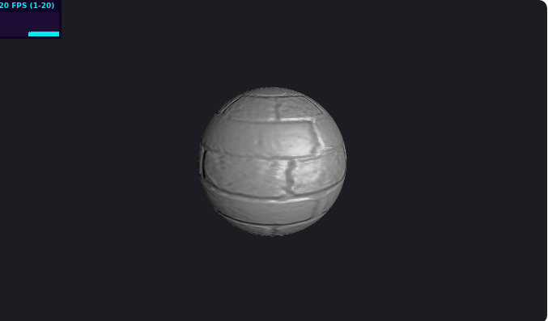
bump mapping
256 horizontal and vertical components
|
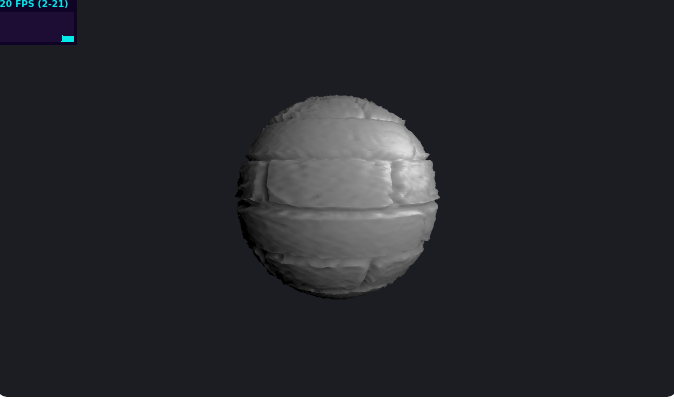
displacement mapping
256 horizontal and vertical components
|
|
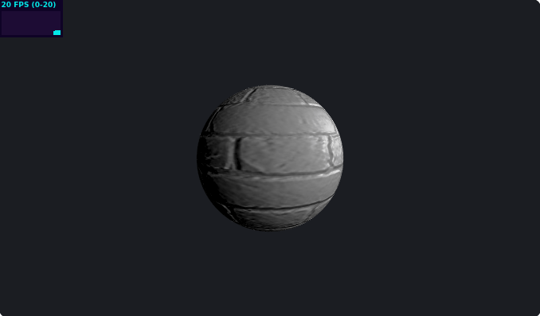
bump mapping
512 horizontal and vertical components
|
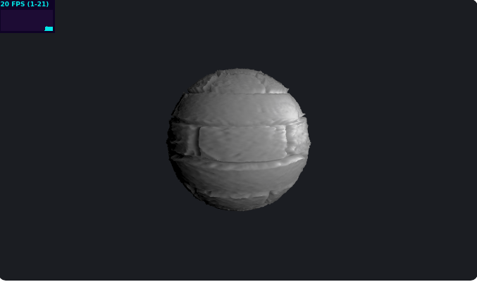
displacement mapping
512 horizontal and vertical components
|
- For my custom shader, I decided to experiment with changing the motion and coloring effects of the geometries given to me. I decided to add a TorusGeometry in addition to the SphereGeometry and mess with both of their parameters to alter the size and number of components. I also altered the over-time coloring effects to try out a different range/gradient of colors. I also tried to alter the motion of the shapes' normals, instead of being as blobby and mushy, it's more of a high-energy, low-polygonal, spinning, semi-in-sync jitter-dance. I think it looks really funny, and I call it:
"I'm Shaking From What We've Been Through But Nothing Could Have Torus Apart."
It's a metaphor for this class: it's put me through so much struggle but I love it so much.